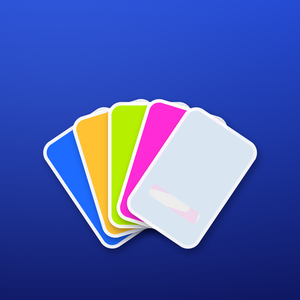

DopaThemes adds 7 new themes to Dopamine's Theme picker, right alongside the stock ones (Dopamine, ElleKit, Deep Blue Sky, Blood Sky, Desert Dusk). Every theme has its own matching app icon, and each one is picked to look clearly different from the stock themes and from each other.
Trollamine (blue into green), Gold, Lime, Midnight (black), Frost (icy white), Mocha (coffee and cream) and Neon (magenta and cyan). Each one sets the background, the menu and window tint, the boot logo and the app icon, exactly like a stock theme.
DopaThemes writes the themes and icons straight into the Dopamine app, the same way Dopamine's own themes are stored. Nothing runs in the background, and the themes stay when you're not jailbroken. Icons switch through iOS itself, so they change everywhere, including Settings and notifications.
Needs Dopamine 2.x installed through TrollStore. Also adds the themes to Trollamine and duplicated Dopamine copies. If you update Dopamine, reinstall DopaThemes to put the themes back. Uninstalling DopaThemes takes them back out and leaves Dopamine exactly as it was.